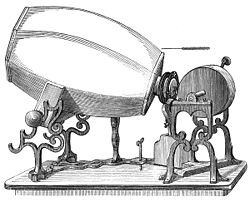

The phonautograph is the earliest known device for recording sound. Previously, tracings had been obtained of the sound-producing vibratory motions of tuning forks and other objects by physical contact with them, but not of actual sound waves as they propagated through air or other mediums.

Since the term "LP" has come to refer to the 12-inch 33+1⁄3 rpm vinyl disk, the first LP is the Mendelssohn Violin Concerto in E minor played by Nathan Milstein with Bruno Walter conducting the New York Philharmonic (then called the Philharmonic-Symphony Orchestra of New York), Columbia ML 4001, found in the Columbia Record Catalog for 1949, published in July 1948.

In a properly matched analog-to-digital converter (ADC) and digital-to-analog converter (DAC) pair, the analog signal is accurately reconstructed, within the constraints of the Nyquist–Shannon sampling theorem, which dictates the sampling rate and quantization error dependent on the audio or video bit depth.

Walkman cassette players were very popular during the 1980s, which led to "walkman" becoming an unofficial term for personal stereos of any producer or brand.[6] 220 million cassette-type Walkmen were sold by the end of production in 2010;[7] including digital Walkman devices such as DAT, MiniDisc, CD (originally Discman then renamed the CD Walkman) and memory-type media players,[8][9] it has sold approximately 400 million at this time.

MP3 (or mp3) as a file format commonly designates files containing an elementary stream of MPEG-1 Audio or MPEG-2 Audio encoded data, without other complexities of the MP3 standard.
| The Beginning |
First Vinyl |
First Digital Recording |
The Walkman |
MP3 |
| The first audio ever recorded on the "phonautograph" by Édouard-Léon Scott de Martinville |
The first Vinyl LP was introduced by Columbia Records1948 |
The first comercial digital recording was made by Takeaki Anazawa |
Sony introduced the "Walkman" |
The MP3 Player took the World by Storm |
| 1857 |
1948 |
1971 |
1980 |
1998 |